Steps for Windows Hardning
A) Setting Hostname
1) Method 1: Using the GUI
Open Server Manager:
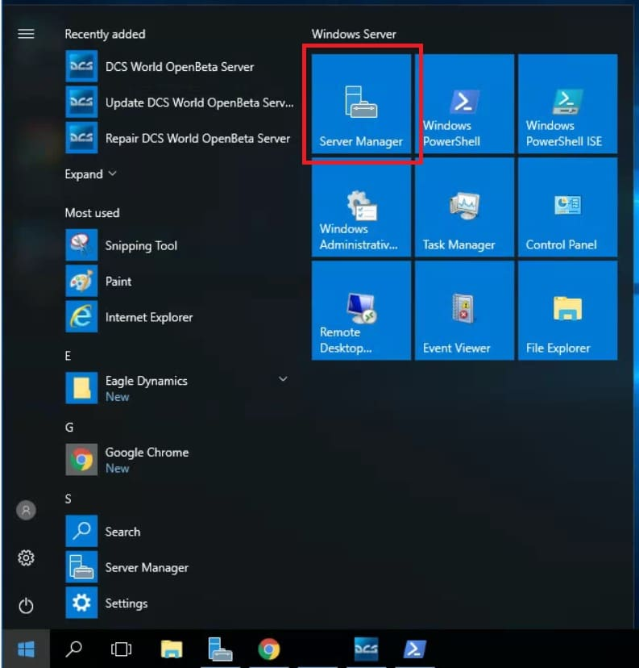
Click on the ‘Local Server’ from the left sidebar menu and click on the ‘Computer name’.:
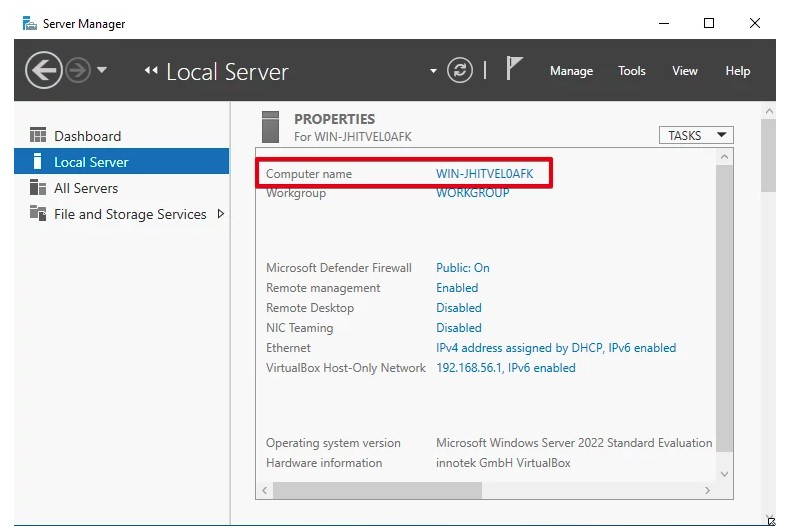
The ‘System Properties’ dialog appears on the screen. Click on the ‘Change’ button in the ‘Computer Name’ tab.
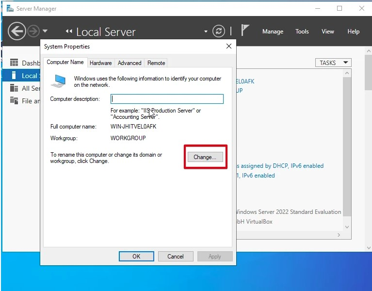
Enter the server name in the ‘Computer name’ field that you want to use as a server name.
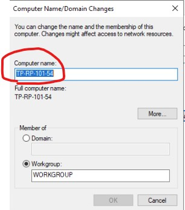
OK , SAVE , Restart Computer and its Done
Assign Ip Address to required interfaces
press WIN+R and type ncpa.cpl and hit ok
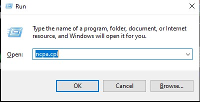
identify interfaces to assign ip address, like below and double clik on it
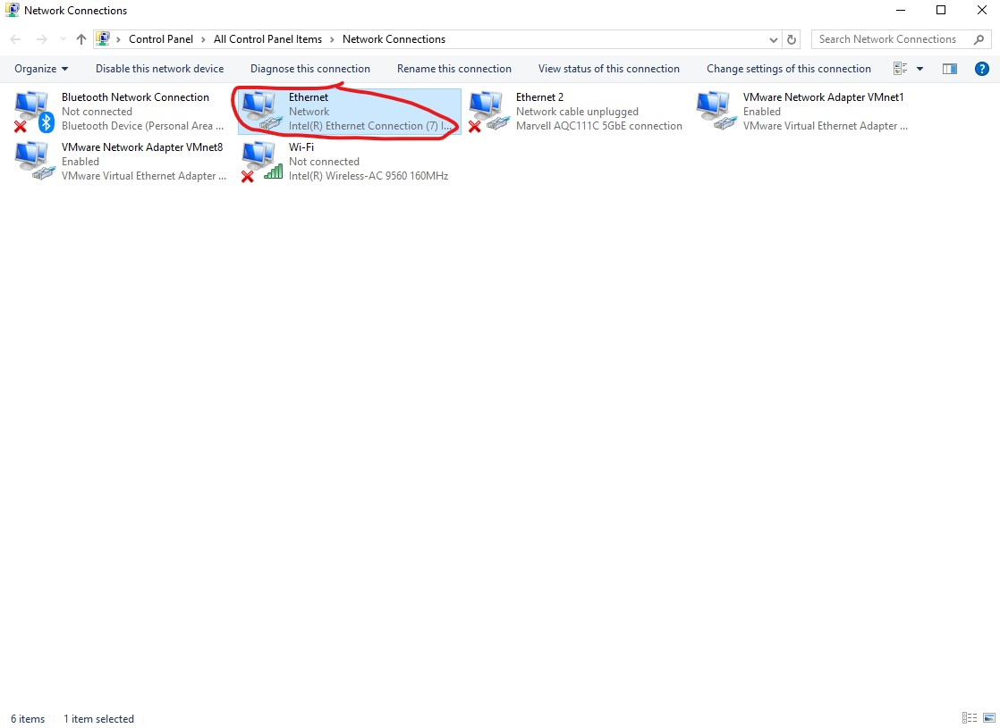
On double click you will get below like dialog box ,click on Properties
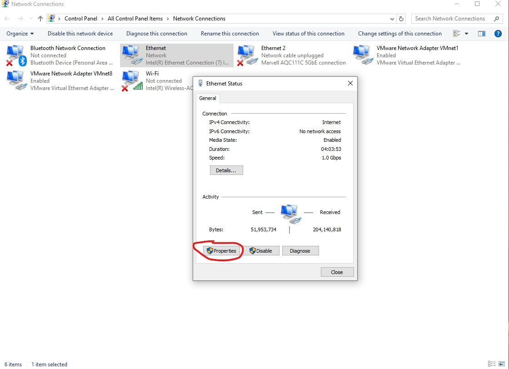
After click on Properties you will get below like dialog box , now double click on internet protocol version 4
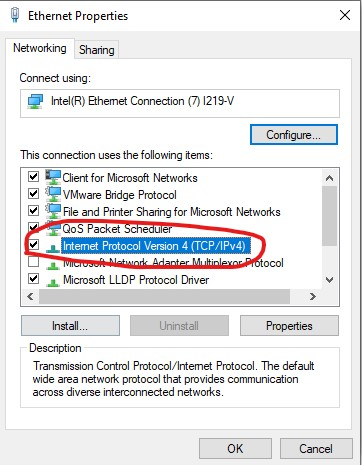
select on red mark and insert your ip and click on save .
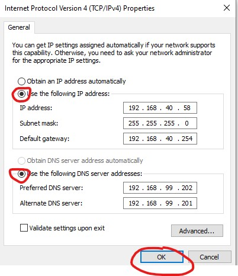
Check Partitions as per requirnment.
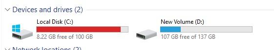
Check for updates.
go to the seach bar and type update and select check for updates.
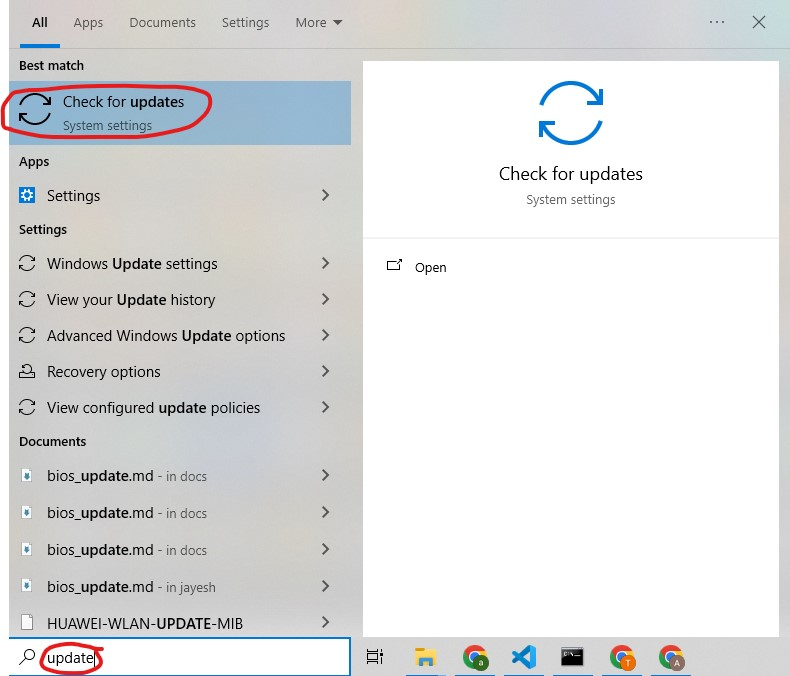
Clik on check fo rupdates , until you got below message , You are Update!!!
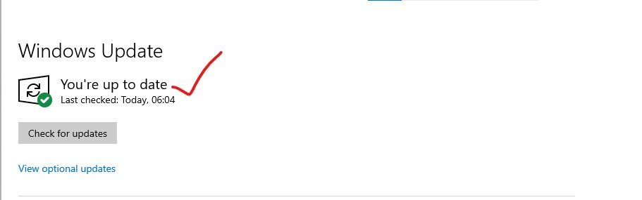
Power Setting
Go to search bar and type Control Panel and clik on it.
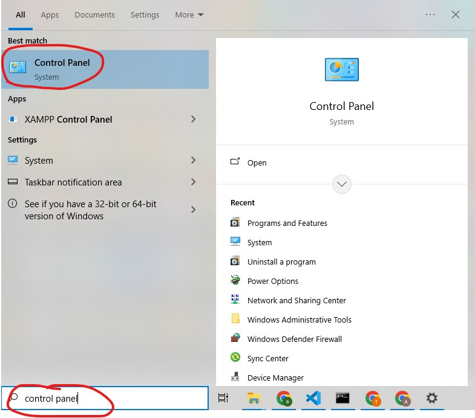
Now Clik on category and select small icons.
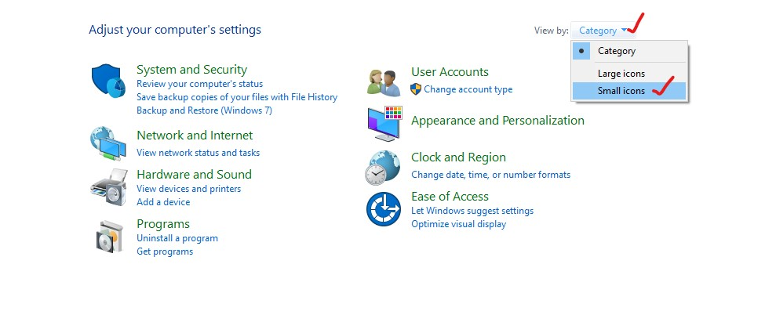
Now Clik on Power Option.
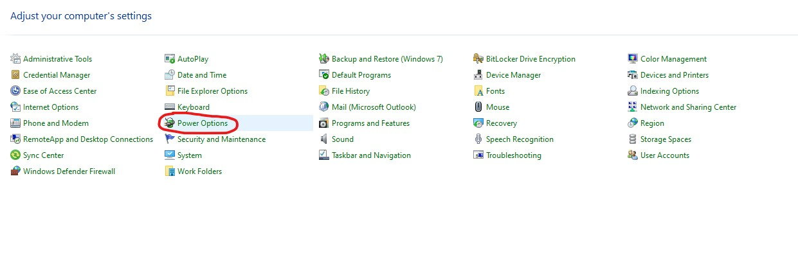
By default Balanced (recommonded) is selected.
Click on Change plan setting.
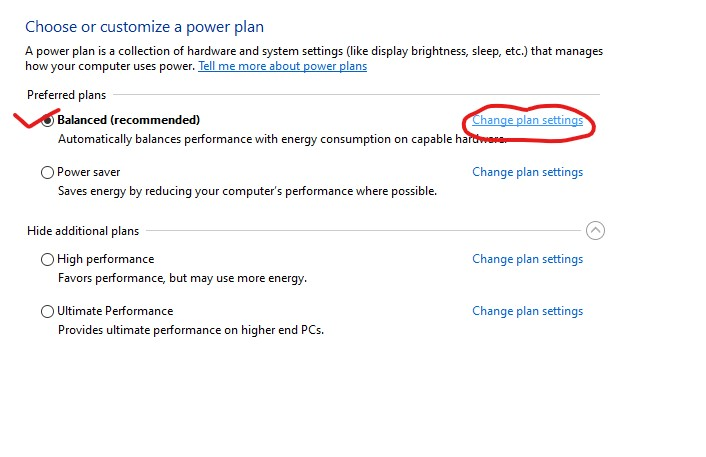
A new windows will open , Set both setting as Never and click on Save changes.
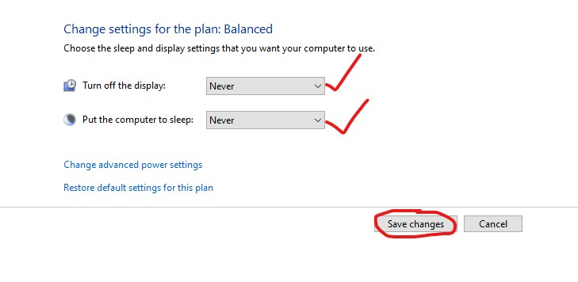
Now Click on Change plan setting as shown below picture.
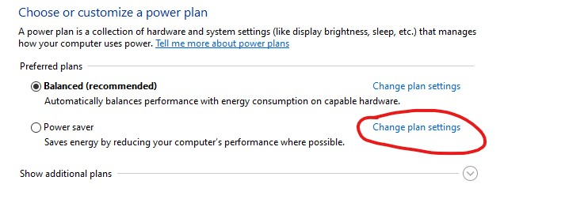
A new windows will open , Set both setting as Never and click on Save changes.
Now click on arrow as show in picture
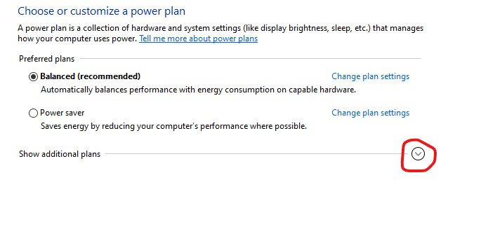
Select change setting
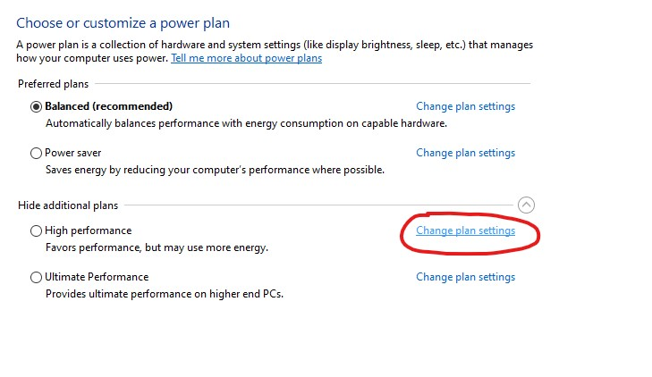
A new windows will open , Set both setting as Never and click on Save changes.
Select change setting
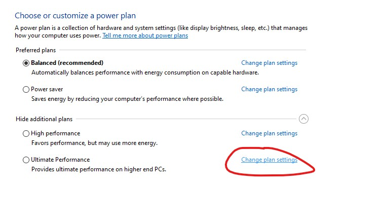
A new windows will open , Set both setting as Never and click on Save changes.
Disallow users from turning on/off windows firewall
Go to the run and type gpedit.msc and hit ok.
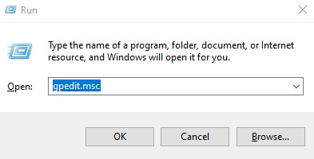
Nevigate to the Computer Configuration --> Administrative Templates --> Network --> Network Connections --> Windows Firewall --> Standard Profile
Refer below screenshot.
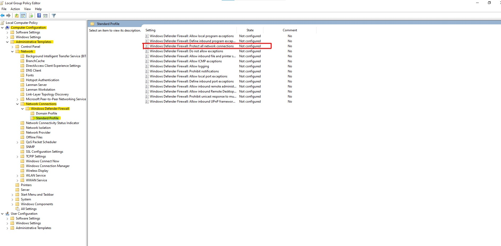
Double click on Windows Defender Firewall: Protect all network connections it will open new windows like below.
Select Enable button and then ApplythenOk
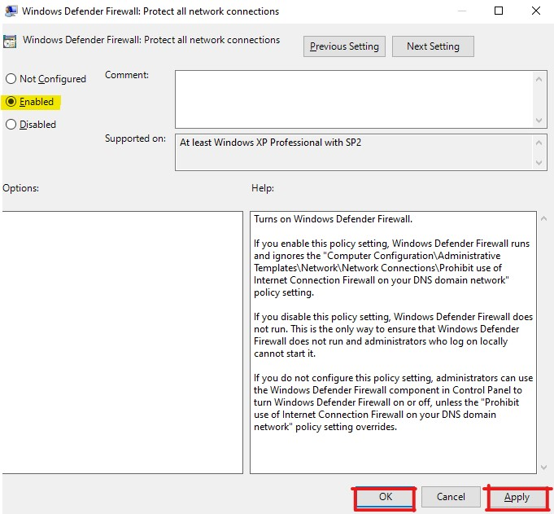
Digitally sign communications (always)
Go to the run and type gpedit.msc and hit ok.
Nevigate to path Computer Configuration\Windows Settings\Security Settings\Local Policies\Security Options
Refer below screen
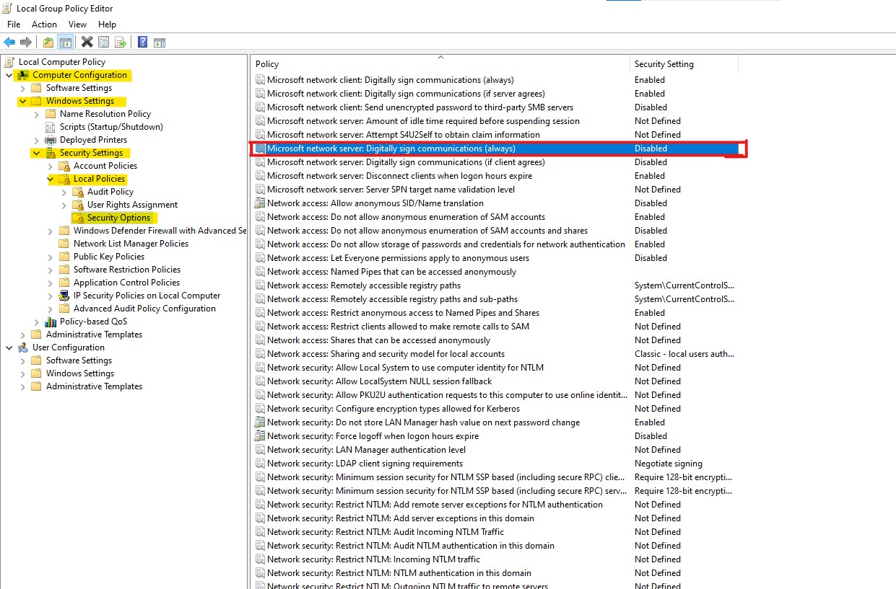
Double click on Microsoft network server: Digitally sign communications (always) By default its disabled , make it enable Apply then OK.
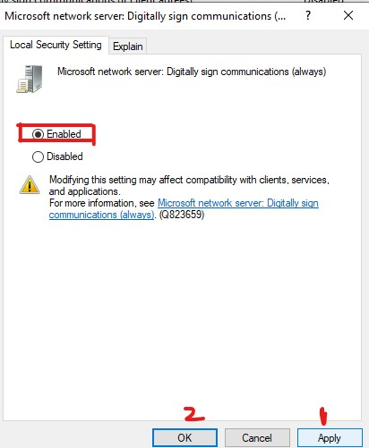
Enable the virtualization based security
Go to the run and type gpedit.msc and hit ok.
Nevigate to path Computer Configuration > Administrative Templates > System > Device Guard.
Click on Device Guard and on right side you will see Turn On virtualisation Based Security.
By default its Not Configured. See below image.
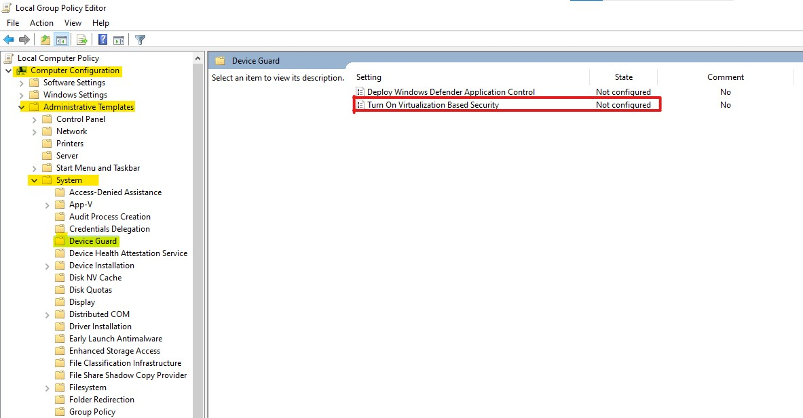
Click on Turn On virtualisation Based Security. and select Enable then Apply and OK
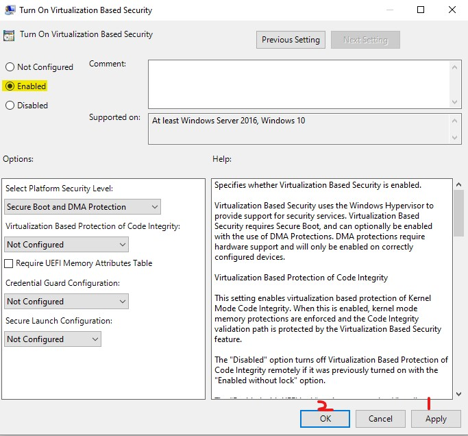